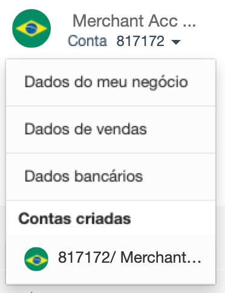
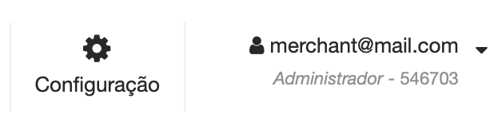
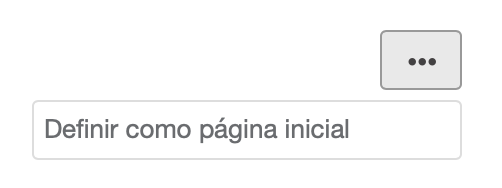

Atualizar minhas informações
Saiba como alterar sua senha, atualizar suas preferências de usuário, alterar o logotipo da loja e solicitar a alteração de seus dados bancários.
Nesta página
Antes de explicar como o módulo PayU é organizado, você precisa do seguinte:
O módulo PayU é dividido em quatro grupos principais:
Este painel contém as opções necessárias para gerenciar as contas associadas ao comércio atual. Neste painel, você encontra as seguintes opções:
| Opção | Sub-opção | Disponível em | Descrição |
|---|---|---|---|
| Merchant ID |  |
Número de identificação da sua loja no sistema PayU. Este ID é necessário quando você deseja usar Integrações. | |
| Conta | Informação da conta | |
Exibe o nome e o ID da conta selecionada. Essa opção também permite que você altere a conta e execute operações relacionadas a ela. Clique no símbolo ▾ para encontrar essas opções ou trocar de conta.  |
| Dados do meu negócio | |
Mostra a localização e os principais dados de contato da sua empresa. Além disso, esta opção mostra as pessoas associadas à sua empresa. | |
| Dados da suas vendas | |
Mostra as informações de como você vende, o que vende, o logotipo da sua loja, informações de entrega, como você oferece seus produtos ou serviços e como seus clientes podem entrar em contato com você. | |
| Dados bancários | |
Mostra a conta bancária e o banco intermediário para onde você deseja transferir os fundos arrecadados para esta conta. | |
| Contas criadas | |
Mostra a lista de contas disponíveis em sua loja. | |
| Saldo disponível | |
Exibe o saldo disponível na conta selecionada. | |
| Home | |
Exibe a página de boas-vindas do módulo PayU. Para obter mais informações, consulte a página Home. | |
| Transações | Relatório de Vendas | |
Revise os detalhes dos pagamentos recebidos, incluindo os métodos de pagamento mais usados e clientes frequentes. Para obter mais informações, consulte Relatório de Vendas. |
| Disputas | |
Gerencie os processos de disputas gerados em sua conta PayU. Para obter mais informações, consulte Disputas. | |
| Extrato | |
Permite que você entenda o fluxo de dinheiro em sua conta, as cobranças aplicadas e as taxas e impostos relacionados. Para obter mais informações, consulte Extrato. | |
| Certificado de retenção |  |
Baixe seu Certificado de Retenção de acordo com o período de solicitado. Para obter mais informações, consulte Certificado de retenção. | |
| Transferências | Transferências |      |
Permite que você envie os fundos coletados em sua conta PayU para sua conta bancária. Para obter mais informações, consulte Transferências. |
| Programar transferência | |
Permite criar transferências em frequência diária, semanal e mensal. Além disso, você pode configurar transferências personalizadas conforme necessário. Para obter mais informações, consulte Programar transferência. | |
| Para conta bancária |  |
Como o PayU no Brasil não é uma instituição de pagamento, os fundos arrecadados em sua conta são transferidos para sua conta diariamente. Por meio desse relatório, é possível saber o status das transferências diárias. Este relatório está disponível apenas para contas do Brasil e possui as mesmas colunas e opções do Relatório de transferências. |
|
| Editar dados bancários | |
Permite solicitar a alteração da conta bancária e do banco intermediário para onde deseja transferir os fundos arrecadados para esta conta. Para obter mais informações, consulte Atualizar minhas informações | |
| Venda com a PayU | Venda na internet | |
Permite criar solicitações de pagamento para que você possa cobrar de seus clientes sem ter um site. Para obter mais informações, consulte Solicitação de pagamento |
| Cobranças em dinheiro | |
Permite que você gere cupons de pagamento ou cartões de cobrança* com as informações necessárias para permitir que seus clientes efetuem pagamentos em dinheiro quantas vezes forem necessárias nos pontos de pagamento disponíveis. Para obter mais informações, consulte Cupons de pagamento. *Os cartões de cobrança estão disponíveis apenas na Argentina. |
|
| Ver os links criados | |
Permite que você encontre e gerencie as informações de link de cobrança (Solicitação de pagamento) e Cupons de pagamento* que você criou em sua conta. *Cupons de pagamento estão disponíveis apenas na Argentina e na Colômbia. |
Este painel contém as opções necessárias para gerenciar seu comércio e seu usuário.
Esta opção permite gerenciar usuários, permissões, perfis e a configuração técnica de sua loja. Ao clicar no botão Configuração, você pode acessar as seguintes opções:
| Opção | Available in | Descrição |
|---|---|---|
| Gestão de usuários | |
Permite que você conceda acesso aos membros de sua equipe para que eles possam receber pagamentos online ou verificar informações sobre seus pagamentos. Para obter mais informações, consulte Gestão de usuários. |
| Perfis e permissões | |
Permite criar perfis personalizados com permissões específicas. Nesta seção, você também pode consultar a permissão padrão incluída no Módulo PayU. Para obter mais informações, consulte Gerenciamento de perfis e permissões. |
| Configuração técnica | |
Nesta opção, você encontra as variáveis necessárias para integrar o PayU ao seu site. Além disso, você pode configurar as notificações de pagamentos processados e os Disputas. Para obter mais informações, consulte Configuração técnica. |
Esta opção permite que você gerencie seu perfil. Na visualização principal desta opção, você encontra o seu e-mail, o seu perfil atual no módulo PayU (para a conta atual) e o Id da conta; clique no símbolo ▾ para exibir as configurações de usuário disponíveis.
| Opção | Descrição |
|---|---|
| Mudar comércio | Esta opção está disponível quando seu usuário está inscrito em mais de um comércio. |
| Meu perfil | Nesta opção, você pode configurar suas preferências e atualizar sua senha. |
| Encerrar sessão | Esta opção fecha a sessão do usuário ativo. |
Este painel carrega a opção selecionada no painel esquerdo ou na opção no topo. A página Home é selecionada por padrão, por isso carrega assim que você faz login no módulo PayU.
Para definir uma opção conforme exibida por padrão, clique no menu de três pontos no canto superior esquerdo do painel e selecione Definir como página inicial.
A página Homo é o ponto de partida do painel do Vendedor. Ela mostra os atalhos para fazer vendas online, controlar suas finanças, transferir fundos, aprender sobre e-commerce e deixar comentários.
Nesta página, você também pode fazer um tour com o botão Tour virtual. Este botão mostra as principais opções de gerenciamento de sua conta.
O rodapé apresenta o número de telefone para contato e o link para os Termos e Condições de acordo com o país de processamento.
A seguir estão os números de telefone e horários de contato:
(+5411) 598 42132> Seg - Sex 09:00 - 22:00 (UTC -3: 00) (+5511) 4130 5311> Seg - Sex 9h às 18h / Sáb 9h às 15h - Fuso Horário de Brasília (UTC -3: 00) (+562) 258-13949> Seg - Sex 8:00 - 21:00 hora chilena (+57) 601 654 0721> Seg - Sex 7:00 - 20:00 hora colombiana (UTC -5: 00) (+5255) 474 11439> Seg - Sex, 7:00 - 20:00, hora CDMX (+507) 836 5577> Seg - Sex, 7:00 - 20:00, hora colombiana (UTC -5: 00) (+511) 708 5381> Seg - Sex 7:00 - 20:00 hora peruana (UTC -5: 00)Saiba como alterar sua senha, atualizar suas preferências de usuário, alterar o logotipo da loja e solicitar a alteração de seus dados bancários.
Encontre aqui todos os detalhes que o ajudam a integrar o seu site usando qualquer uma das integrações que oferecemos.